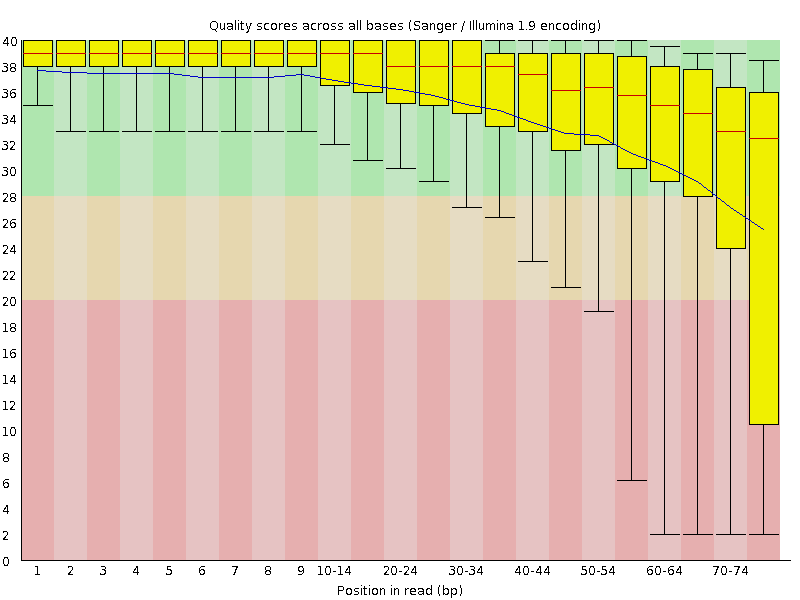
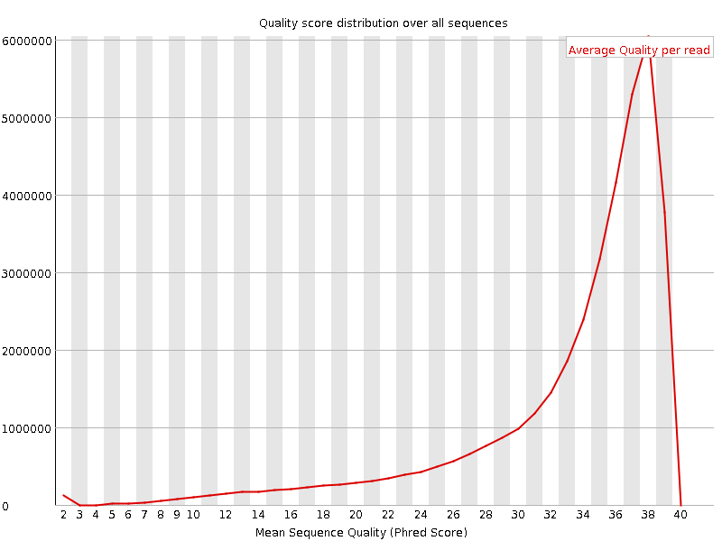
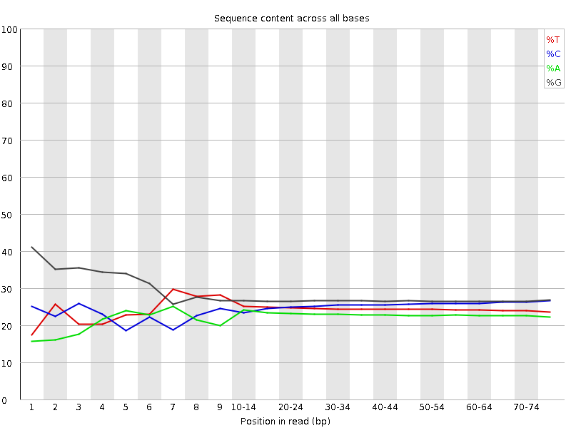
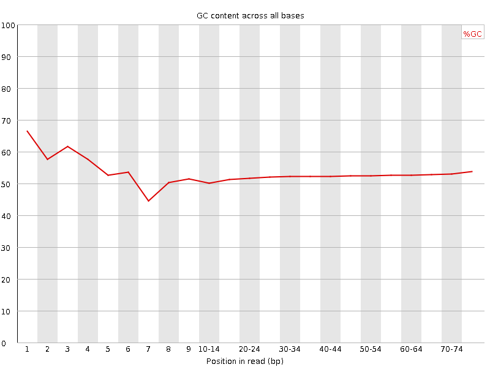
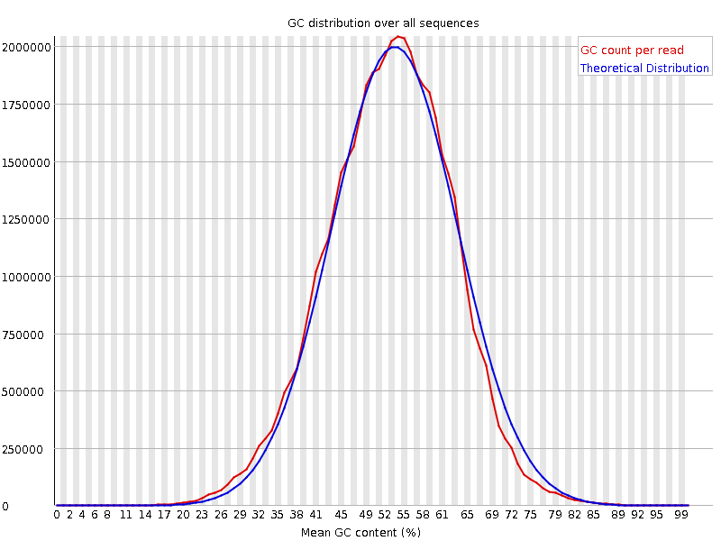
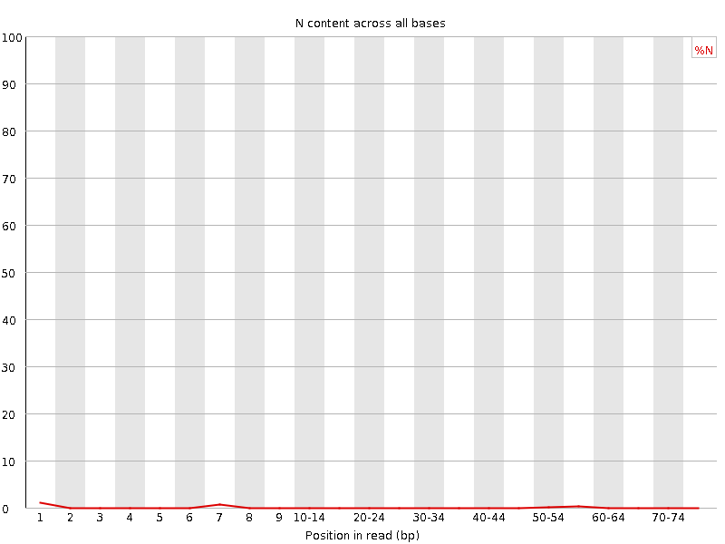
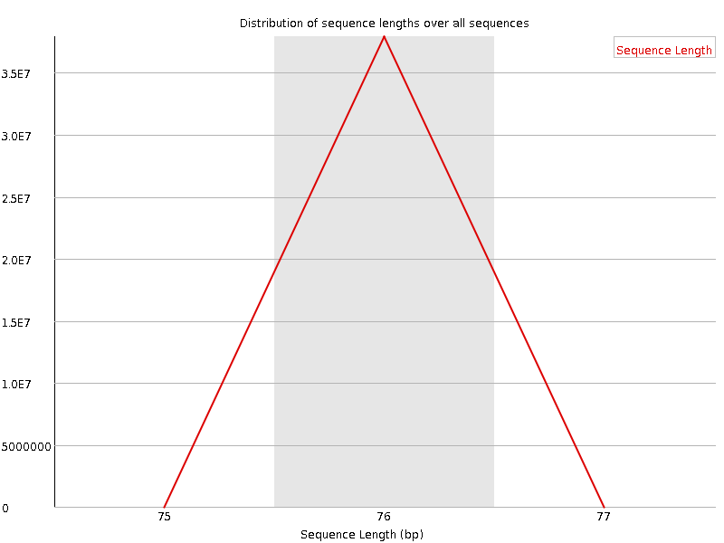
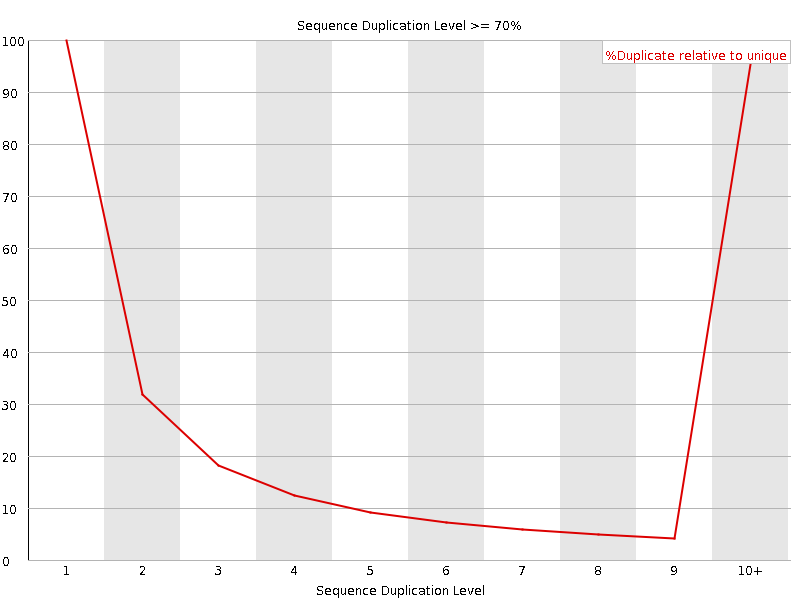
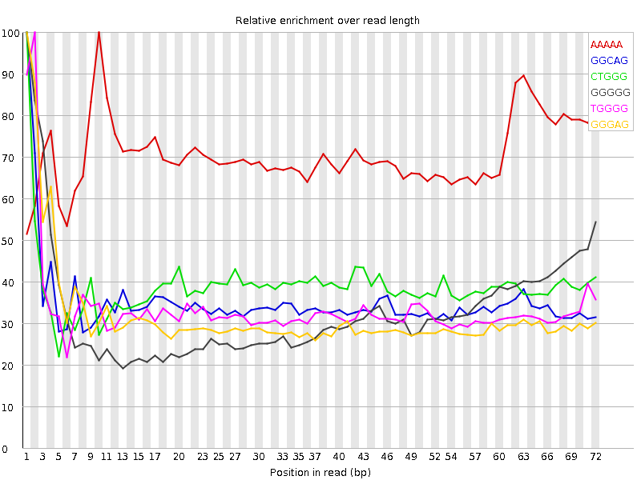

![[OK]](Icons/tick.png) Basic Statistics
Basic Statistics
| Measure | Value |
|---|---|
| Filename | SRR307932_1.fastq |
| File type | Conventional base calls |
| Encoding | Sanger / Illumina 1.9 |
| Total Sequences | 37913777 |
| Filtered Sequences | 0 |
| Sequence length | 76 |
| %GC | 52 |
Per base sequence quality

Per sequence quality scores

![[FAIL]](Icons/error.png) Per base sequence content
Per base sequence content

Per base GC content

Per sequence GC content

Per base N content

Sequence Length Distribution

Sequence Duplication Levels

Overrepresented sequences
No overrepresented sequences
![[WARN]](Icons/warning.png) Kmer Content
Kmer Content

| Sequence | Count | Obs/Exp Overall | Obs/Exp Max | Max Obs/Exp Position |
|---|---|---|---|---|
| AAAAA | 5322320 | 3.1605284 | 4.47151 | 10 |
| GGCAG | 7154855 | 2.2152076 | 6.333601 | 1 |
| CTGGG | 7286395 | 2.103589 | 5.404813 | 1 |
| GGGGG | 7390140 | 1.7587068 | 5.3542047 | 1 |
| TGGGG | 6545625 | 1.7440145 | 5.1941833 | 2 |
| GGGAG | 5596705 | 1.599178 | 5.0445895 | 1 |
| GGGGA | 5302835 | 1.5152088 | 6.0456724 | 1 |
| GTGGG | 5067555 | 1.3501979 | 6.3025055 | 1 |
| GGGGT | 4843180 | 1.2904154 | 5.0861506 | 1 |
| TGTGT | 3588150 | 1.198356 | 6.123646 | 2 |
| GTGTG | 3832265 | 1.1431749 | 6.1165915 | 1 |
| TACAA | 2129195 | 1.0639822 | 7.987307 | 6 |
| GTACA | 2387195 | 0.9935354 | 6.9468226 | 5 |
| CGGGG | 3744170 | 0.96548504 | 5.080882 | 1 |
| TGTAC | 2305205 | 0.8946219 | 6.361773 | 4 |
| GTGTA | 2202210 | 0.7887502 | 6.232796 | 3 |